- Introduction
- Installation
- Theme Installation via WordPress
- Theme Installation via FTP
- Setting up the Demo Content
- First Steps
- General Options
- Upload your logo
- Menu Setup
- Navigation & Header Options
- Footer Options
- Title Bar Options
- Typography Options
- Color Options
- Blog Options
- Page Options
- Custom CSS Options
- Create Posts
- Create Blog page
- Create Portfolio posts
- Create Portfolio page
- Create Team Posts
- Create Team Page
- Create Orther posts & page
- How To
- Use Page builder
- Create Full Width Section
- Set Background Section
- Set Up Homepage
- Create One Page
- Create Contact Form
- Revolution Slider
- Widgets
- Set Up WooCommerce ( eShop )
- Theme Options
- Page Options
- Useful
- Theme Update via WordPress
- Theme Update via FTP
- Speed Optimization
- Child Theme
- Changelog
Introduction
Thank you for purchasing Beoreo WordPress Theme. Before you get started, please be sure to always check out these documentation files. We outline all kinds of good information, and provide you with all the details you need know to use Beoreo Theme.
If you are unable to find your answer here in the documentation, please contact us on our Support Forum or directly from our themeforest account
What is included in the price?
- Beoreo WordPress Theme
- Child Theme
- Lifetime Updates
- Theme Documentation
- Premium Plugins
- Premium Plugins documentations
- Premium Support - To our support forum.
Please don't forget to rate Beoreo with 5 stars and leave a nice review, it means a lot to us.
Simply log in into your Themeforest, go to Downloads section and click 5 stars next to the Beoreo WordPress theme.
Thanks!
Bearsthemes Team
Theme Installation via WordPress
When you download the theme from Themeforest, you will get an archive file in .zip extension.
You need to unzip that archive. When done, you should see Beoreo.zip (zip file name can be changed from version to version).
Please, follow the steps below to install Beoreo Theme.
Step 1 - Login to your WordPress Dasrdoard.
Step 2 - Go to Appearance > Themes. Click Add new button, located at the top of the screen or Add new theme ( see screenshots below ).
Step 3 - Click on Upload button at the top of the screen.
Step 4 - Choose Beoreo.zip.
Step 5 - Wait while the theme is uploaded and installed then activate the theme.
Step 6 - After activating the theme a notice should appear on the top of the screen, click on begin installing plugins ( see screenshots below ).
Step 7 - Select all the plugin,change Bulk Actions drop to Install then click apply ( see screenshots below ).
Step 8 - Congratulation you are ready to use Beoreo, check the First Steps part of our documentation to see what you may want to do before starting to edit your WordPress Site.
Common Theme Installation Problems
“Are you sure you want to do this?”
If you get the “Are you sure you want to do this” message
when installing Beoreo.zip file via WordPress, it means you have an
upload file size limit. Install the theme via FTP if this happens, or
ask your hosting company to increase the limit.
Missing stylesheet file
If you get an error saying that the stylesheet is missing,
then you have uploaded the wrong folder. Please check that you are
uploading the Beoreo.zip within the Theme Files folder. You have to
unzip the file that you download from Themeforest to find this.
Theme Installation via FTP
If you are going to install the theme using FTP, you will need an FTP Client, such as FileZilla.
When you download the theme from Themeforest, you will get an archive file in .zip extension.
You need to unzip that archive. When done, you should see Beoreo Folder(folder name can be changed from version to version).
Please, follow the steps below to install the theme via FTP:
Step 1 - Log into your hosting space (server) via FTP client.
Step 2 - In extracted archive folder, find Beoreo folder
Step 3 - Upload the Beoreo folder to your server in path .../wp-content/themes/.
Step 4 - The uploaded path should be like this: .../wp-content/themes/Beoreo/
Step 5 - Login to your WordPress Dasrdoard and go to Appearance > Themes and activate the Beoreo Theme.
Step 6 - After activating the theme a notice should appear on the top of the screen, click on begin installing plugins ( see screenshots below ).
Step 7 - Select all the plugin,change Bulk Actions drop to Install then click apply ( see screenshots below ).
Step 8 - Congratulation you are ready to use Beoreo, check the First Steps part of our documentation to see what you may want to do before starting to edit your WordPress Site.
Additional Links
Setting up the Demo Content
Before importing the dummy data Make sure you have all the plugin installed and Import Custom Post Type UI ( if you want to use portfolio, team, testimonial, packages and woocommerce. You make sure to install all first ).
Install Plugin
We will explain how to install plugin before import dummy data
Import Custom Post Type UI
We will explain how to import custom posttype ui before import dummy data
1. One Click Importer Demo Data
We will explain how to import the demo using the Theme One Click Importer
2. Manual Importer Demo Data
2.1. WordPress Importer
We will explain how to import the demo using the WordPress Importer
2.2. Revolution Importer
We will explain how to import the slider
2.3. Theme Options Importer
We will explain how to import the Import Options
2.4. Widget Importer
We will explain how to import the widget using the Widget Importer & Exporter
Error or Problem with Import of the Demo
If you have problem with the Import of the demo please check this section
Install Plugin
Step 1 - Log into your WordPress Dasrdoard.
Step 2 - Install and Activate All Plugin.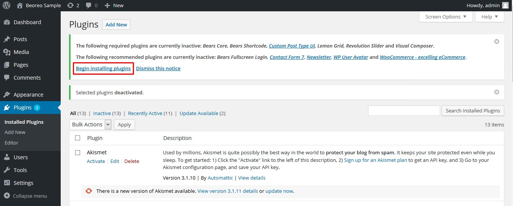
Import Custom Post Type UI
Step 1 - Log into your WordPress Dasrdoard.
Step 2 - Go to CPT UI > Import/Export.
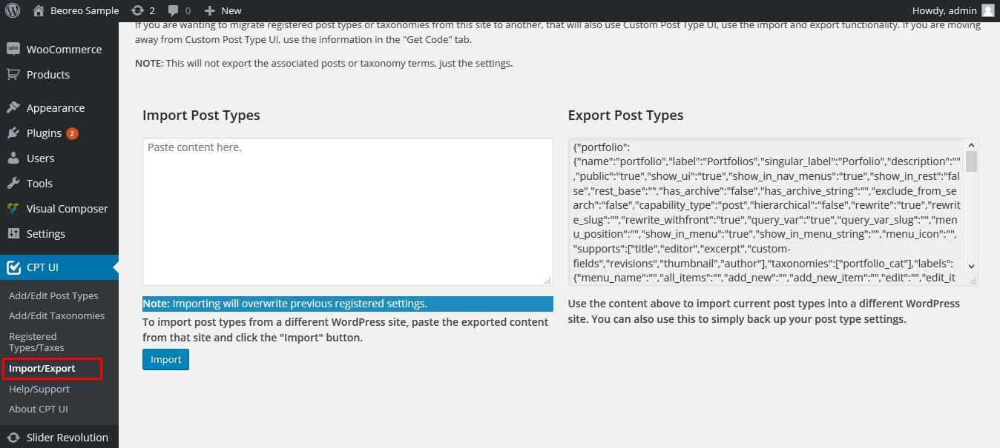
Step 3 - Import Post Type.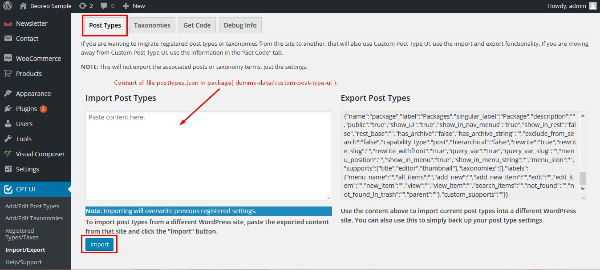
Step 4 - Import Taxonomies.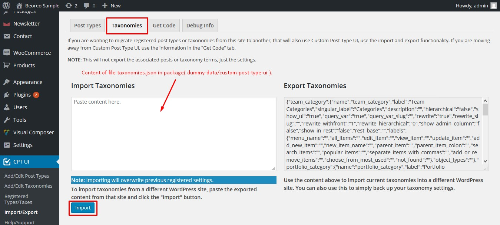
1. One Click Importer Demo Data
Step 1 - Log into your WordPress Dasrdoard.
Step 2 - Go to Appearance > Theme Options > Demo Importer.
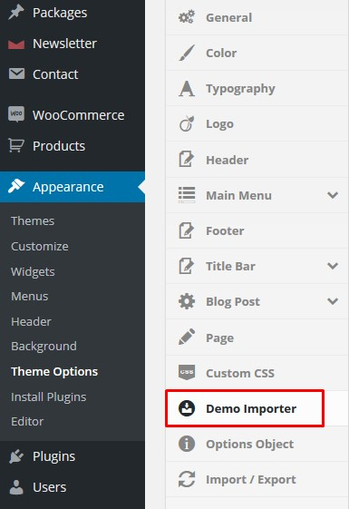
Step 3 - Then Click on Import Demo.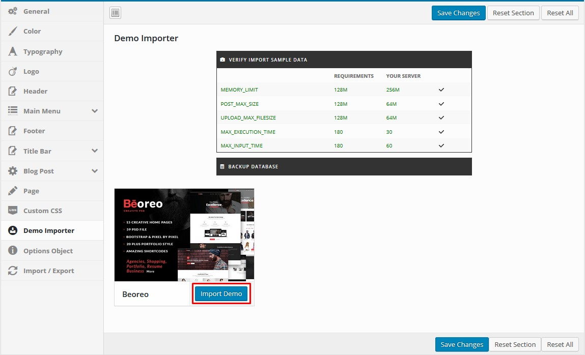
Step 4 - The Dummy
content is really big and may takes more then 30 minutes to import
depending where you are living, Do not interrupt/cancel the import
process!
Step 6 - Done!
2. Manual Importer Demo Data
If the script auto importing demo data doesn't works with your host, we had included demo data within the theme files, take a look at the folder /dummy-data
2.1. WordPress Importer
Step 1 - Log into your WordPress Dasrdoard.
Step 2 - Go to Tools > Import. Then click on WordPress ( bottom of the list ).
Step 3 - A window should appear click the Install now button which is on bottom right.
Step 4 - Click Activate
plugin & Run Importer. Then choose the content.xml file and
click upload file and import Do not interrupt/cancel the import process!
Step 6 - Done! But you still need to set the Menu, Homepage.
The importer should be run only once. If something went wrong and you need to import the content again, you may need to reset your WordPress.
Use this plugin to reset the WordPress database : http://wordpress.org/plugins/wordpress-database-reset/
2.2. Revolution Importer
Step 1 - Log into your WordPress Dasrdoard.
Step 2 - Go to Slider Revolution and import slider.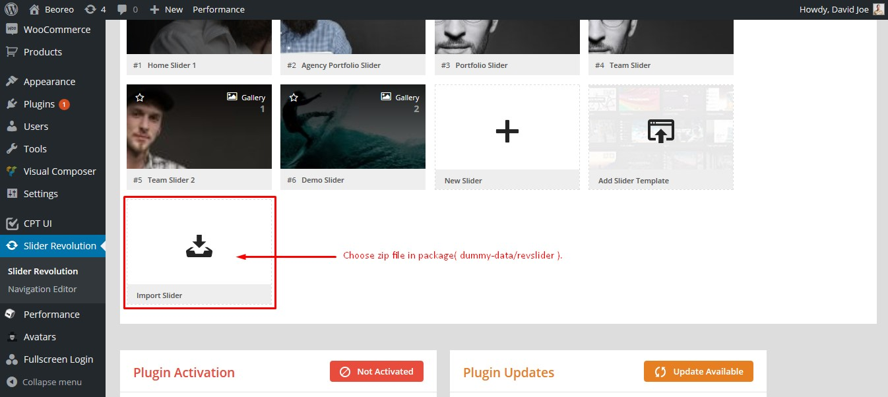
2.3. Theme Options Importer
Step 1 - Log into your WordPress Dasrdoard.
Step 2 - Go to Appearance > Theme Options > Import/Export and import theme options.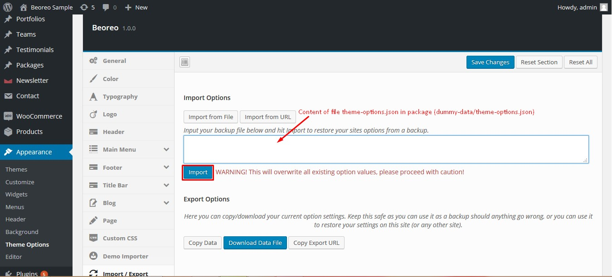
2.4. Widget Importer
Step 1 - Log into your WordPress Dasrdoard.
Step 2 - Install plugin Widget Importer & Exporter.
Step 3 - Go to Tools > Widget Importer/Exporter and import widget.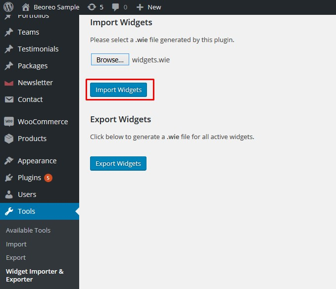
Error or Problem with Import of the Demo
If you have problems importing the demo ( example :
infinite loading, error 505 with when using wordpress importer ) then
you may have a problem with the server settings. Please create ticket in Support Forum.
General Options
You can enable Less Design, change Body Layout, change Body Background and enable Page Loader in the Theme Options. Please, follow the steps below to change general options.
Step 1 - Login to your WordPress Dasrdoard.
Step 2 - Go to Appearance > Theme Options > General .
Step 3 - Choose which part of the theme you want to modify.
- Less Design: To use the less design features.
- Layout: To modify Body layout with wide or boxed.
- Body Background: To modify Body background with image, color, etc.
- Page Loader: To Enable/Disable page loader.
Step 4 - When you have finish to customize the general options don't forget to save
Upload your logo
You can upload your logo image in the Theme Options. Please, follow the steps below to upload your logo:
Step 1 - Login to your WordPress Dasrdoard.
Step 2 - Go to Theme Options > Logo.
Step 3 - Upload a Logo ( Used For normal header ) and a Logo ( Used for Stick Header ).( our logo is 154px x 45px ).
Upload your favicon
You can upload your favicon image in the Appearance. Please, follow the steps below to upload your favicon:
Step 1 - Go to Appearance > Customize > Site Identity.
Step 2 - Upload your favicon. Should be a Png/Gif image.
Menu Setup
Creating your menu
First we will see how to create your menu
Adding pages to your menu
How to add page to our new menu
Assigning a Menu to a Location
Select where to show our menu
Mega Menu
Learn how to make an awesome mega menu
Menu with Icon
Learn how to use icon for the menu
Creating your menu
Step 1 - Login to the WordPress Dasrdoard.
Step 2 - From the 'Appearance' menu on the left-hand side of the Dasrdoard, select the 'Menus' option to bring up the Menu Editor.
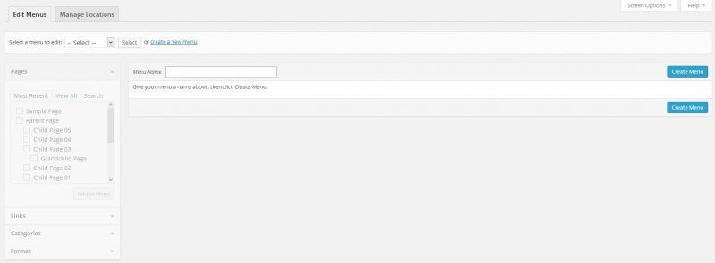
Step 3 - Select Create a new menu at the top of the page.
Step 4 - Enter a name for your new menu in the Menu Name box.
Step 5 - Click the Create Menu button.
Your menu is now defined, and you can now add pages to it (steps below).
Adding pages to your menu
The Screen Options allow you to choose which items you can use to add to a menu. Certain items, like Posts are hidden by default. The Screen Options are located in the top right corner of your WordPress Dasrdoard.
Step 1 - Locate the pane entitled Pages.
Step 2 - Within this pane, select the View All link to bring up a list of all the currently published Pages on your site.
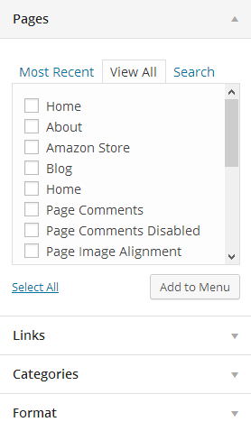
Step 3 - Select the Pages that you want to add by clicking the checkbox next to each Page's title.
Step 4 - Click the Add to Menu button located at the bottom of this pane to add your selection(s) to the menu that you created in the previous step.
Step 5 - Click the Save Menu button once you've added all the menu items you want.
Your custom menu has now been saved.
Assigning a Menu to a Location
Once you've created a menu and filled it with items, it's time to assign it to one of the theme pre-defined locations.
Step 1 - Go to Appearance > Menus and click Manage Locations.
Step 2 - Assign each Theme Location with a menu. You can assign menus to multiple Theme Locations.
Step 3 - Click the Save Changes button.
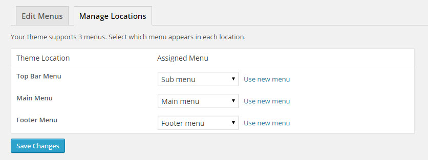
Mega Menu
Beoreo features Mega Menus. The mega menus are available only for top level navigations items only in "Main Menu" area.
Follow the steps below to create a mega menu:
Step 1 - Add a an item to the menu editor. This has to be a top level item!
Step 2 - Click on arrow icon in the top right-hand and exapnd.
Step 3 - Seclect the columns number you want to use (from 2 to 4) in Submenu Type.
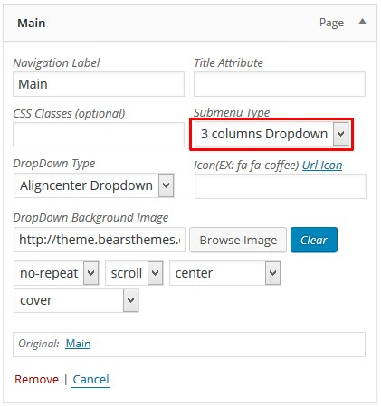
Step 4 - Now, you need to add child menu items, which will represent columns in the mega menu.
First level of child items will represent Titles in each of 3 columns.
Add 3 sub child menu items, like on the image below.
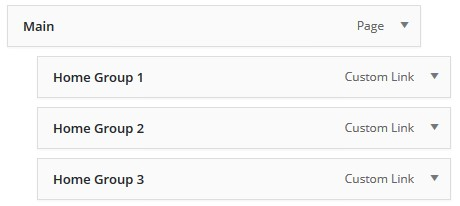
Step 5 - Now, add child items
to each of those columns. This will represent your actual sub-menu
pages. Take a look at the image below.
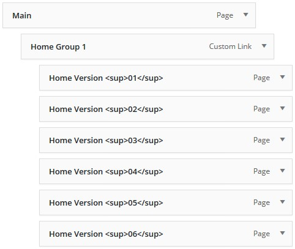
The menu dropdown should now look something like this :
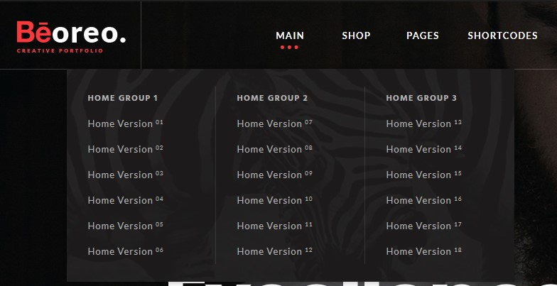
Step 6 - If you want to Remove the Titles (First Column, Second Column Third Column) Go back to the Mega menu setting and check Hide Mega Menu heading.
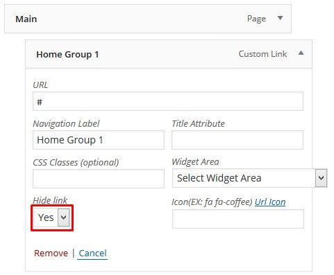
The menu dropdown should now look something like this :
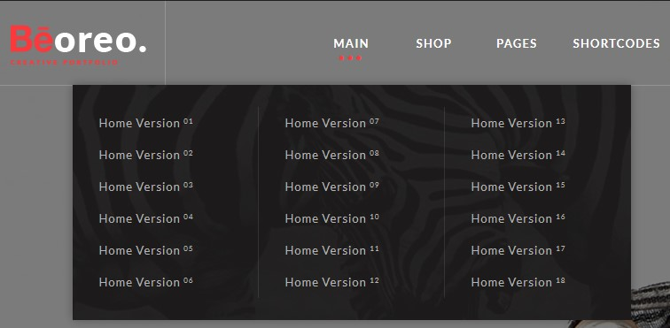
Step 7 - Adding Widget / Image to the
Menu. To do this first you need to have a Widget set with some widget (
you can create new sidebar go to Appearance > Widget ). Menu doesn't work with all the widget, but works will all Beoreo Widget and Default WordPress Text Widget
Step 8 - When you have set your sidebar with widget click on the sub child menu you want to turn into widget area ( we will turn the third column into a widget area), make sure it doesn't have sub menu
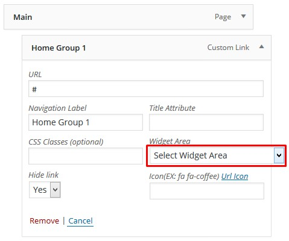
The menu dropdown should now look something like this :
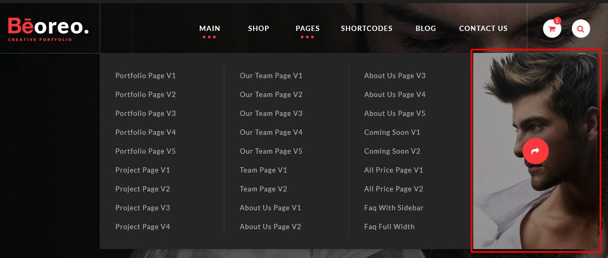
Step 9 - Enter class icon FontAwesome for icon input. Ex: fa fa-heart.
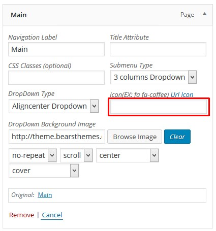
The menu dropdown should now look something like this :
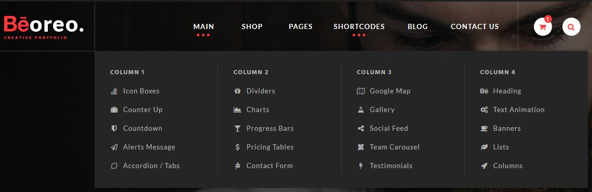
Step 10 - DropDown menu align with Dropdown Type select(Alignleft, Alignright, Aligncenter, Fullwith).

Step 11 - Choose image for DropDown menu Background Image.
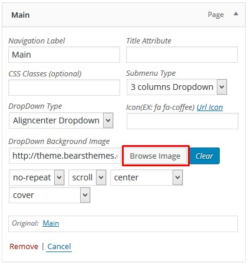
Header Options
Beoreo comes with 03 header style.
Follow the steps below to find out how to change the header:
Step 1 - Login to your WordPress Dasrdoard.
Step 2 - Go to Appearance > Theme Options > Header .
Step 3 - Select the header layout.
Navigation Options
Beoreo comes with 04 navigation
Follow the steps below to find out how to change the navigation:
Step 1 - Login to your WordPress Dasrdoard.
Step 2 - Go to Appearance > Theme Options > Menu .
Step 3 - Choose which part of the theme you want to modify.
- Fixed: To Enable/Disable fixed menu.
- Stick: To Enable/Disable stick menu when scrolling.
- First Level Font Options: To modify the first level item in menu properties.
- Stick First Level Font Options: To modify the first level item in menu properties.
- Sub Level Font Options: To modify the first level item in menu properties.
- Background: To change background menu.
- Background Sub Level: To change background dropdown menu.
- Stick Background: To change background stick menu.
Footer Options
Beoreo comes with 02 footer style.
Follow the steps below to find out how to change the footer:
Step 1 - Login to your WordPress Dasrdoard.
Step 2 - Go to Appearance > Theme Options > Footer .
Step 3 - Select the footer layout.
Step 4 - Go to Appearance > Theme Options > Footer > Footer V1 / Footer V2 Choose which part of the footer you want to modify.
- Footer Top Margin: To modify margin for footer top.
- Footer Top Padding: To modify padding for footer top.
- Footer Top Background: To modify background with image, color, etc.
- Footer Bottom Padding: To modify padding for footer bottom.
- Footer Bottom Background: To modify background with image, color, etc.
Step 5 - When you have finish to customize the color don't forget to save.
Title Bar Options
Follow the steps below to find out how to change the title bar:
Step 1 - Login to your WordPress Dasrdoard.
Step 2 - Go to Appearance > Theme Options > Title Bar .
Step 3 - Choose which part of the title bar you want to modify.
- Margin: To modify margin for title bar.
- Padding: To modify padding for title bar.
- Background: To modify background with image, color, etc.
- Title Bar Heading: To modify value of Font Family, Font Subsets, etc for title text.
- Title Bar Path: To modify value of Font Family, Font Subsets, etc for title text.
- Sub Text: To modify sub text of title bar..
- Sub Text Format: To modify value of Font Family, Font Subsets, etc for title text.
- Delimiter: To modify Delimiter of page breadcrumb in title bar.
Step 4 - When you have finish to customize the color don't forget to save.
Typography Options
Follow the steps below to find out how to change the Typography:
Step 1 - Login to your WordPress Dasrdoard.
Step 2 - Go to Appearance > Theme Options > Typography .
Step 3 - Choose which part of the typography you want to modify.
- Body Font Options: To modify value of Font Family, Font Subsets, etc.
- H1 - H6 Font Options: To modify value of Font Family, Font Subsets, etc.
Step 4 - When you have finish to customize the color don't forget to save.
Color Options
Follow the steps below to find out how to change the Color:
Step 1 - Login to your WordPress Dasrdoard.
Step 2 - Go to Appearance > Theme Options > Color .
Step 3 - To modify primary color.
Step 4 - When you have finish to customize the color don't forget to save.
Blog Options
Follow the steps below to find out how to change the Archive Post:
Step 1 - Login to your WordPress Dasrdoard.
Step 2 - Go to Appearance > Theme Options > Blog .
Step 3 - Choose which part of the Blog you want to modify.
Archive Post Options
- Select Layout: To modify layout of blog.
- Content Column: To modify class bootstrap content column.
- Sidebar Left Column: To modify class bootstrap sidebar left column.
- Sidebar Right Column: To modify class bootstrap sidebar right column.
- Read More Text: To modify text of label button read more in blog.
Signle Post Options
- Select Layout: To modify layout of blog.
- Content Column: To modify class bootstrap content column.
- Sidebar Left Column: To modify class bootstrap sidebar left column.
- Sidebar Right Column: To modify class bootstrap sidebar right column.
- Show Navigation: To show or not post navigation on your single blog.
- Show Author: To show or not post author on your single blog.
- Show Comment: To show or not post comment on your single blog.
Step 4 - When you have finish to customize the color don't forget to save.
Page Options
Follow the steps below to find out how to change the page options:
Step 1 - Login to your WordPress Dasrdoard.
Step 2 - Go to Appearance > Theme Options > Page .
Step 3 - Choose whether or not you would like to show page comments.
Step 4 - When you have finish to customize the color don't forget to save.
Custom CSS Options
Follow the steps below to find out how to change the custom css:
Step 1 - Login to your WordPress Dasrdoard.
Step 2 - Go to Appearance > Theme Options > Custom CSS .
Step 3 - Quickly add some CSS to your theme by adding it to this block.
Step 4 - When you have finish to customize the color don't forget to save.
Create Blog Posts
Adding Posts
You can customize each posts modifying the post options.
We will explain you how to create post using Beoreo.
Gallery Posts
We will explain you how to create Gallery Post.
Video Posts
We will explain you how to create Video Post.
Audio Posts
We will explain you how to create Audio Post.
Quote Posts
We will explain you how to create Quote Post.
Show your Posts
How to create a Blog page to show your post
Adding Posts
Step 1 - Log in to your WordPress Administration Panel (Dasrdoard)..
Step 2 - Click the 'Posts' tab.
Step 3 - Click the 'Add New' sub-tab.
Step 4 - Start filling in the
blanks: enter your post title in the upper field, and enter your post
body content in the main post editing box below it.
Step 5 - As needed, select a category, add tags, post format, fill in the meta setings below the editor.
Step 6 - Upload a featured image for your Post.
Create Gallery Post
Step 1 - Change Post Format to Gallery. 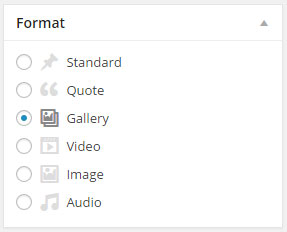
Step 2 - Scroll down until you see the Gallery Settings. 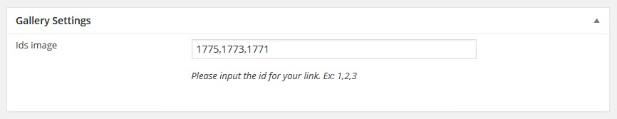
Step 3 - After finishing, Update your Post, it should looks like this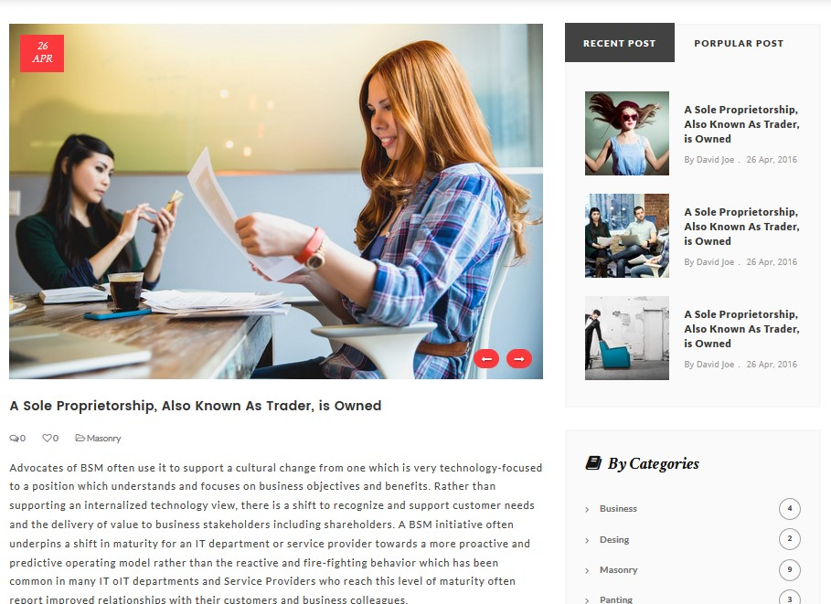
Video Post
Step 1 - Change Post Format to Video. 
Step 2 - Scroll down until you see the Video Settings. 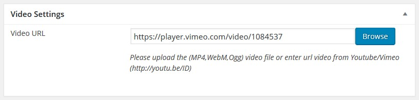
Step 3 - After finishing, Update your Post, it should looks like this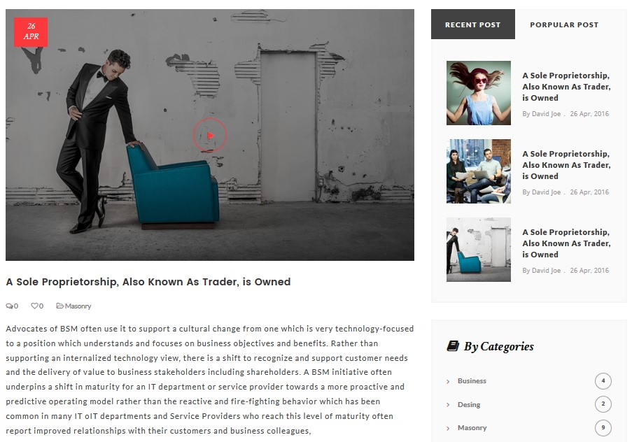
Audio Post
Step 1 - Change Post Format to Audio. 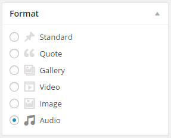
Step 2 - Scroll down until you see the Audio Settings. 
Step 3 - Publish or Update your post, it should looks like this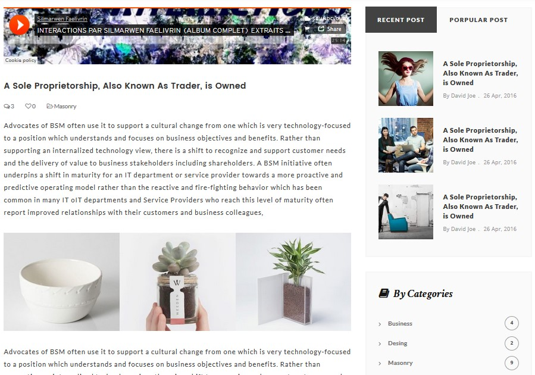
Quote Post
Step 1 - Change Post Format to Quote. 
Step 2 - Scroll down until you see the Quote Settings.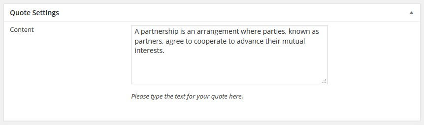
Step 3 - After finishing, Update your Post, it should looks like this
Link Post
Step 1 - Change Post Format to Link.
Step 2 - Scroll down until you see the Link Settings.
Step 3 - After finishing, Update your Post, it should looks like this
Show your Posts
To you show your posts you need to create a Blog page. Click here to check how create a blog page.
Create Blog page
Follow the steps bellow to understand how to create a blog page.
Create blog page
Step 1 - Log in to your WordPress Administration Panel (Dasrdoard)..
Step 2 - Click on Pages > Add New.
Step 3 - Give your page a name then Change the Editor to Backend Editor ( you need to have the Visual Composer plugin activated ).
Step 4 - Click on the Add Element button .
Step 5 - Select the Blog module.
Step 6 - The Blog Settings should appear. You can customize the Blog by modifying the settings
Step 7 - After finishing, Publish the page.
Create Portfolio post
Add Portfolio Items
How to add Portfolio item to showcase your work.
Video Portfolio Posts
We will explain you how to create Video Post.
Add Portfolio Items
Step 1 - Log in to your WordPress Administration Panel (Dasrdoard).
Step 2 - Click the 'Portfolio' tab.
Step 3 - Click the 'Add New Portfolio Item' sub-tab.
Step 4 - Start filling in the
blanks: enter your portfolio title in the upper field, and enter your
portfolio body content in the main post editing box below it.
Step 5 - Add tag(s) to your item, the tags will be used as a filter on Portfolio Template pages.
Step 6 - Upload a featured image for your portfolio item then publish it.
Video Post
Step 1 - Scroll down until you see the Portfolio Settings.
Step 2 - After finishing, Update your Post
Showing Portfolio Items
To you show your portfolio items you need to create a Portfolio page. Click here to check how create a portfolio page.
Create Portfolio page
Follow the steps bellow to understand how to create a portfolio page.
Create Portfolio page
Step 1 - Log in to your WordPress Administration Panel (Dasrdoard)..
Step 2 - Click on Pages > Add New.
Step 3 - Give your page a name then Change the Editor to Backend Editor ( you need to have the Visual Composer plugin activated ).
Step 4 - Click on the Add Element button
Step 5 - Select the Portfolio module.
Step 6 - The Portfolio Settings should appear. You can customize the Portfolio by modifying the settings
Step 7 - After finishing, Publish the page.
Create Team Post
Add Team Items
How to create your team post.
Add Team Items
Step 1 - Log in to your WordPress Administration Panel (Dasrdoard)..
Step 2 - Click the Teams > Add New.
Step 3 - Fill the title field with the team name, add a Group and Filter category if needed.
Step 4 - Add a featured image, it will represent your team member's image.
Step 5 - Scroll down until you see the Team Settings.
Step 6 - The content is
optional, it will appear under the team main information. Check the
screenshot below to see how team post works.
Step 7 - If you want to change the team member order you will need to change the publish time.
Showing Teams
You need to use the Team module in order to list your teams.
Check the team module page for more information
Create Team page
Create Team page ( standard )
We will explain how to create a team page.
Create Team page ( carousel )
We will explain how to create a team page using Carousel.
Create Team page ( standard )
Step 1 - Log in to your WordPress Administration Panel (Dasrdoard)..
Step 2 - Click on Pages > Add New.
Step 3 - Give your page a name then Change the Editor to Backend Editor ( you need to have the Visual Composer plugin activated ).
Step 4 - Click on the Add Element button
Step 5 - Select the Team module.
Step 6 - The Team should appear. You can customize the Team by modifying the settings
Step 7 - After finishing, Publish the page.
Create Team page ( carousel )
Step 1 - Log in to your WordPress Administration Panel (Dasrdoard)..
Step 2 - Click on Pages > Add New.
Step 3 - Give your page a name then Change the Editor to Backend Editor ( you need to have the Visual Composer plugin activated ).
Step 4 - Click on the Add Element button
Step 5 - Select the Team Carousel module.
Step 6 - The Team Carousel should appear. You can customize the Team Carousel by modifying the settings
Step 7 - After finishing, Publish the page.
Create Orther posts & Page
Please do it same post or portfoio or team.
Theme Options
The theme comes with an extensive Theme Options Panel. From the Theme options panel you will be able to set or change the color of the theme, layout, header style, social icons and a lot more. You should take the time to go through all of these options to ensure that you are getting the most out of the theme. Click Theme Options to access the Theme Options Panel.
General setting
Less Design - Use the less design features.
Layout - Body layout with wide or boxed.
Body Background - Body background with image, color, etc.
Page Loader - Enable/Disable page loader.
Color setting
Main Color - Set primary color.
Typography setting
Body Font Options - Set value of Font Family, Font Subsets, etc.
H1 - H6 Font Options - Set value of Font Family, Font Subsets, etc.
Logo setting
Logo - Select an image file for your logo.
Logo Stick - Select an image file for your logo stick.
Header setting
Header Layout - Select header layout in your site.
Main Menu setting
Fixed - Enable/Disable fixed menu.
Stick - Enable/Disable stick menu.
First Level Font Options - Set value of Font Family, Font Subsets, etc.
Stick First Level Font Options - Set value of Font Family, Font Subsets, etc.
Sub Level Font Options - Set value of Font Family, Font Subsets, etc.
Background - Seclect background for menu.
Background Sub Level - Seclect background for dropdown menu.
Stick Background - Seclect background for stick menu.
Footer setting
Footer Layout - Select footer layout in your site.
Footer Top Margin - Enter the value of margin for Footer Top.
Footer Top Padding - Enter the value of padding for Footer Top.
Footer Top Background - Seclect background for Footer Top.
Footer Bottom Padding - Enter the value of padding for Footer Bottom.
Footer Top Background - Seclect background for Footer Bottom.
Title Bar setting
Margin - Enter the value of margin for Title Bar.
Padding - Enter the value of padding for Title Bar.
Background - Seclect background for Title Bar.
Title Bar Heading - Set value of Font Family, Font Subsets, etc.
Title Bar Path - Set value of Font Family, Font Subsets, etc.
Sub Text - Enter sub text of Title Bar.
Sub Text Format - Set value of Font Family, Font Subsets, etc.
Delimiter - Enter Delimiter of page breadcrumb in Title Bar.
Blog setting
Select Layout - Select layout of blog.
Content Column - Enter class bootstrap content column.
Sidebar Left Column - Enter class bootstrap content column.
Sidebar Right Column - Enter class bootstrap content column.
Read More Text - Enter text of label button read more in blog.
Show Navigation - Show or not post navigation on your single blog.
Show Author - Show or not post author on your single blog.
Show Comment - Show or not post comment on your single blog.
Page setting
Show Page Comment - Show or not page comment on your page.
Custom CSS
Custom CSS Code - Quickly add some CSS to your theme by adding it to this block.
Demo Importer
Demo Importer - Click on the demo you want to import
Page Options
For each page you can change the title style, title background color, select to use a slider and much more! Check the screenshot and read the documentation to see how it works
General setting
Body Layout - Select body layout for page.
Header setting
Select Header - Select header layout for page.
Logo - Select an image logo for page.
Stick Logo - Select an image stick logo for page.
Select Menu - Select menu for page.
Select Position - Select position menu for page.
Disable Stick Menu - Disable Stick Menu for page.
Title Bar setting
Body Layout - Select Background title bar for page.
Footer setting
Select Footer - Select footer layout for page.
Show Footer Top - Show or hide footer top for page.
Show Footer Bottom - Show or hide footer bottom for page.
Revolution Slider
Beoreo theme includes the premium plugin - Revolution Slider.
Once you've installed and activated the Revolution Slider
plugin, you will then see the menu item appear at the bottom of the
WordPress menu, as below:
Documentation
You can import the revolution slider we used in our demo, all slider are in the slider folder. To learn more about the Revolution Slider plugin please read the Plugin documentation
Widgets
Widgets
Beoreo theme comes with Custom widget created specially for the theme.
To set the Widget go to Appearance > Widgets.
Additional Links:
Use Page Builder
Activate Page builder
We will explain how to active the Visual Composer.
Add and modify Row Layout
We will explain how to add Row and change Row layout works.
Edit Element
We will explain how to edit element.
Duplicate Element
We will explain how to duplicate element.
Remove Element
We will explain how to remove element.
About Row / Column / Custom heading / Text Block Design options
We will explain how to edit design options to make your page looks beautiful.
Official Plugin Documentation
For More information about the Visual Composer check the official documentation.
Activate Page builder
Step 1 - Log in to your WordPress Administration Panel.
Step 2 - Click on Pages > Add New.
Step 3 - Click on Backend Editor.
Add and modify Row Layout
Step 1 - Go to your page / post, first activate the backend editor and click Add Element
Step 2 - Select the Row Module
Step 3 - Click on the Edit This Row (pencil icon) to Edit the Row element ( in our example we use row with 3 columns filled with text block )
Step 4 - To change the Row layout ( number of columns ) you need to click the second Icon from the left then select a layout or custom to make your own
Edit Element
Pencil Icon - To Edit Row, Column or Module you need to click the Pencil icon.
Duplicate Element
Pages Icon - To Duplicate Row or Module you need to click the Pages icon.
Remove Element
Trash Box Icon - To Remove Row, Column or Module you need to click the Trash Box icon.
About Row / Column / Custom heading / Text Block Design options
Design Options - When you edit row / column / custom heading / text block module, you can edit the design options . Row / Custom Heading / Text Block element have a default Bottom Margin of 35 pixel, you may want to set it to 0 if you don't want to have bottom space It is Good to add bottom Padding to your Column, so they will looks good on mobile
Row / Custom Heading / Text Block element have a default Bottom Margin of 35 pixel, you may want to set it to 0 if you don't want to have bottom space It is Good to add bottom Padding to your Column, so they will looks good on mobile  Left and Right Margin should NEVER be modified, please left blank
Left and Right Margin should NEVER be modified, please left blank For Row module the Left and Right Padding should also NEVER be modified, please left blank
For Row module the Left and Right Padding should also NEVER be modified, please left blank 
Create Full width Section
We will explain how to create a full width content section.
Step 1 - Go to your page / post, first activate the backend editor and click Add Element
Step 2 - Select the Row Module
Step 3 - Click on the Edit This Row (pencil icon)
Step 4 - Change the Type setting to Full width content then click Save changes
Set Background Section
Fixed Section
We will explain how to create Fixed Section
Parallax Section
We will explain how to create a Parallax Section
Video Section
We will explain how to create a Video section.
Fixed Section
Step 1 - Go to your page / post, first activate the backend editor and click Add Element
Step 2 - Select the Row Module
Step 3 - Click on the Edit This Row (pencil icon)
Step 4 - Click on Design Options ADD padding and REMOVE margin for better result, add a Background Image change to Cover and then Saves changes
Step 5 - Seclect background overlay and Enable background fixed in this row.
Step 6 - Update or Publish your page and you should now have a section with background fixed
Parallax Section
Step 1 - Go to your page / post, first activate the backend editor and click Add Element
Step 2 - Select the Row Module
Step 3 - Click on the Edit This Row (pencil icon)
Step 4 - Add parallax type background for row (Note: If no image is specified, parallax will use background image from Design Options).
Step 5 - Click on Design Options ADD padding and REMOVE margin for better result, add a Background Image change to Cover and then Saves changes
Step 6 - Update or Publish your page and you should now have a section with parallax background
Video Section
Step 1 - Go to your page / post, first activate the backend editor and click Add Element
Step 2 - Select the Row Module
Step 3 - Click on the Edit This Row (pencil icon)
Step 4 - If checked, video will be used as row background.
Step 5 - You can edit the Design options ( remove margin and add padding "optional" ) and then Saves Changes and Update / Publish your page. You should now have a Full width Section with Video
Set your Homepage
Step 1 - Go to Settings > Reading in your WordPress Dasrdoard panel.
Step 2 - Set "Front page displays" to a "Static Page".
Step 3 - In the drop down menu for "Front Page" choose a page which will be your home page.
Step 4 - Leave the drop down menu for "Posts page" empty, as this is not used by the theme.
Step 5 - Save changes.
How to Create One Page
Set the One page sections ID
First we will explain how to create the page
Set the menu for the One page
We will explain how to set the menu needed for your one page.
Set the One page sections ID
Step 1 - Go create or edit a page : Page > Add new.
Step 2 - Select the Row Module
Step 3 - Click on the Edit This Row (pencil icon)
Step 4 - Set an ID for the row, You need to use the Same ID when you create the Menu
Step 5 - Repeat the step 3 and 4 for all the row you want to link for the Menu
Step 6 - Update or Publish your page then go create the Menu needed for your page to work
Set the menu for the One page
Step 1 - Login to the WordPress Dasrdoard.
Step 2 - From the 'Appearance' menu on the left-hand side of the Dasrdoard, select the 'Menus' option to bring up the Menu Editor.
Step 3 - Select Create a new menu at the top of the page.
Step 4 - Enter a name for your new menu in the Menu Name box.
Step 5 - Click the Create Menu button.
Step 6 - Click on Custom Links and add the div ID you used in you page ROW ( example if you set row id to : the_portfolio you need to set the custom link to #the_portfolio ).
Step 7 - Repeat and add custom link for each section you want to link, then set the menu as One Page menu(Edit page and scroll down until you see the Page Options).
Create Contact Form
Create Contact Form
Beoreo uses the contact form 7 plugin, check the steps below to see how to create the contact form.
Create Contact Page
We will explain how to use the form you just created in your page or post.
Contact Form 7 Documentation
Link to the Official Documentation of the Plugin.
Create Contact Form
Step 1 - Log in to your WordPress Dashboard, go to Contact > Add New
Step 2 - Give a Name to your form and change Mail Info
Step 3 - Edit the Form field to change the Form Layout ( if you want to use one of the layout you saw on the demo check the next step )
Step 4 - Save your Form
Create contact page
Step 1 - Log in to your WordPress Administration Panel (Dasrdoard)..
Step 2 - Click on Pages > Add New.
Step 3 - Give your page a name then Change the Editor to Backend Editor ( you need to have the Visual Composer plugin activated ).
Step 4 - Click on the Add Element button
Step 5 - Select the Contact Form 7. 
Step 6 - The Contact Form 7 Settings should appear. Select the Form you want to use you can also customize the Color and change the fields layout and button design
Step 7 - Update / Publish your page
WooCommerce
Beoreo themes is 100% compatible with the WooCommerce plugin for WordPress. It includes full design integration of the WooCommerce pages, shortcodes and widgets.
If you want to use Woocommerce you will have to install the plugin, to do so go to Plugins > Add New , search for Woocommerce.
The Plugin you need to install is WooCommerce - excelling eCommerce by WooThemes
For full documentation visit the following websites:
Child Theme
Beoreo comes with a Child Theme.
Simply install Beoreo_Child.zip like a regular WordPress theme.
What is a Child Theme?
A child theme is a theme that inherits the functionality of another theme, called the parent theme. Child themes allow you to modify, or add to the functionality of that parent theme. A child theme is the best, safest, and easiest way to modify an existing theme, whether you want to make a few tiny changes or extensive changes. Instead of modifying the theme files directly, you can create a child theme and override within.
Why use a Child Theme?
If you modify an existing theme and it is updated, your changes will be lost. With a child theme, you can update the parent theme (which might be important for security or functionality) and still keep your changes. It’s a great way to get started if you are just learning WordPress theme development.
Additional Links
Disable Comments
Comments are enabled on WordPress by default. You can change this default for new posts or pages you’ll publish in the future, as well as change it for posts or pages you already published.
To change the defaults for new posts or pages, go to Settings → Discussion.
To disable comments on an existing post/page/project, open it up for editing. Now beneath the main content area, you should see a box labeled “Discussion”. Simply uncheck both boxes and save your changes.
What if you can’t see the discussion box?
Then you need to click the “Screen Options” tab in the upper right corner of your screen and check the box to enable the discussion module. You still need to close the tab and navigate to the bottom of the page and uncheck “Allow Comments” in the discussion module.
Theme Update via WordPress
Updating the theme via WordPress is very similar to the install process via WordPress.
Follow the steps below to update your theme via WordPress:
Step 1 - Log into your WordPress Dasrdoard.
Step 2 - Go to Appearance > Themes.
Step 3 - Deactivate the Beoreo Theme by simply activating a different theme. Once you activate a different theme, you can delete the Beoreo theme.
Step 4 - Delete the Beoreo Theme. Do not worry, your content will not be lost!
Step 5 - Then simply upload the new “Beoreo.zip” file in the Appearance > Themes section. Click on the Install Themes tab at the top and choose to upload the zip file. You have this step explained in section: Theme Installation via WordPress.
Theme Update via FTP
Updating the theme via FTP is very similar to the install process via FTP.
Follow the steps below to update your theme via FTP:
Step 1 - Go to .../wp-content > themes
location on your server using a FTP client and backup your "Beoreo"
theme folder by saving it to your computer, or you can choose to simply
delete it. Your content will not be lost.
Step 2 - Download the new version of Beoreo theme from your Themeforest and retrieve Beoreo folder by unpacking the zip that you download from Themeforest and Beoreo_(version.number).zip.
Step 3 - Then simply drag and drop the new "Beoreo" theme folder into .../wp-content > themes location. Choose to “Replace” the current one if you did not delete it.
Step 4 - Log into your WordPress Dasrdoard, go to Appearance > Themes and activate the new Beoreo theme.
Speed Optimization
If you think your website takes too much time to load maybe you should.
- Install a Cache Plugin for WordPress. We recommend W3 Total Cache.
- Install an Image Compress Plugin. We recommend WP Smush It.
- Install a Database Optimizer Plugin We recommend WP Optimize
- Reduce the number of posts on the page
- Reduce the number of unnecessary plugins.
- Use more icons and less images.
Changelog
Version 1.0 (2016.06.15)
- First Release!